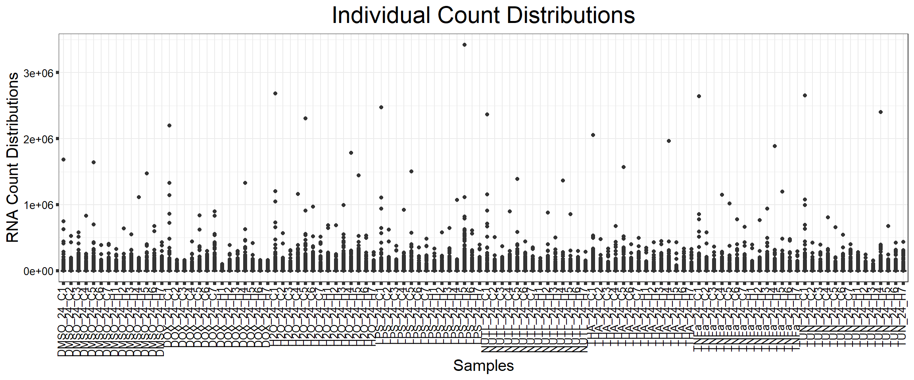
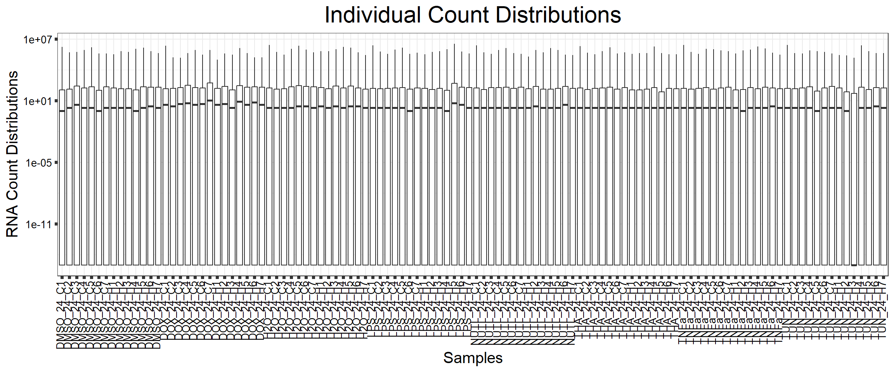
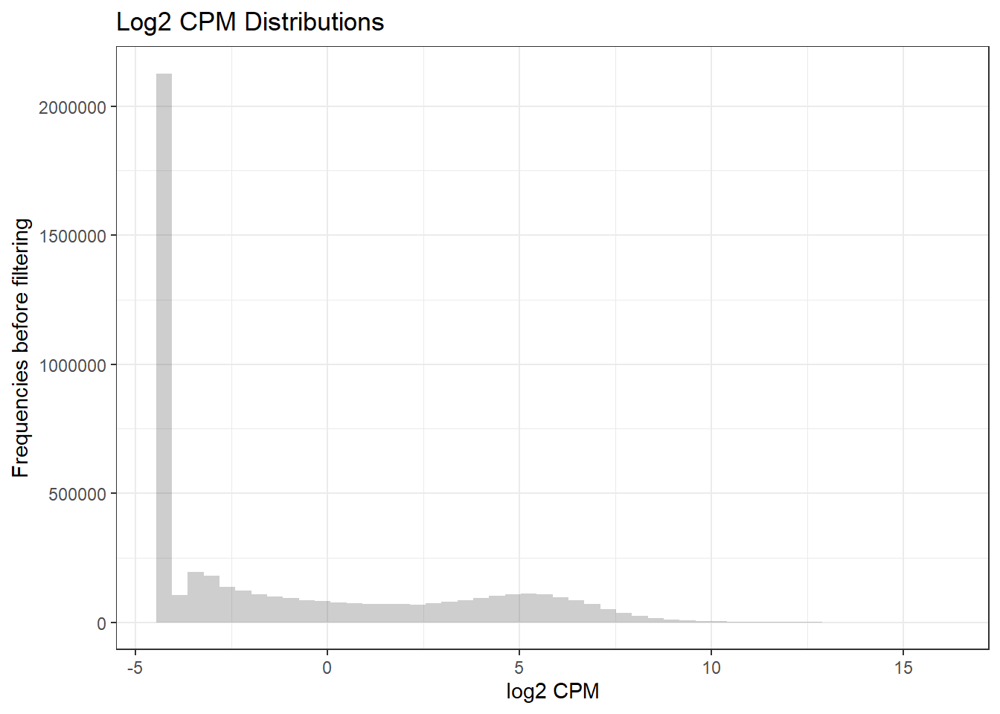
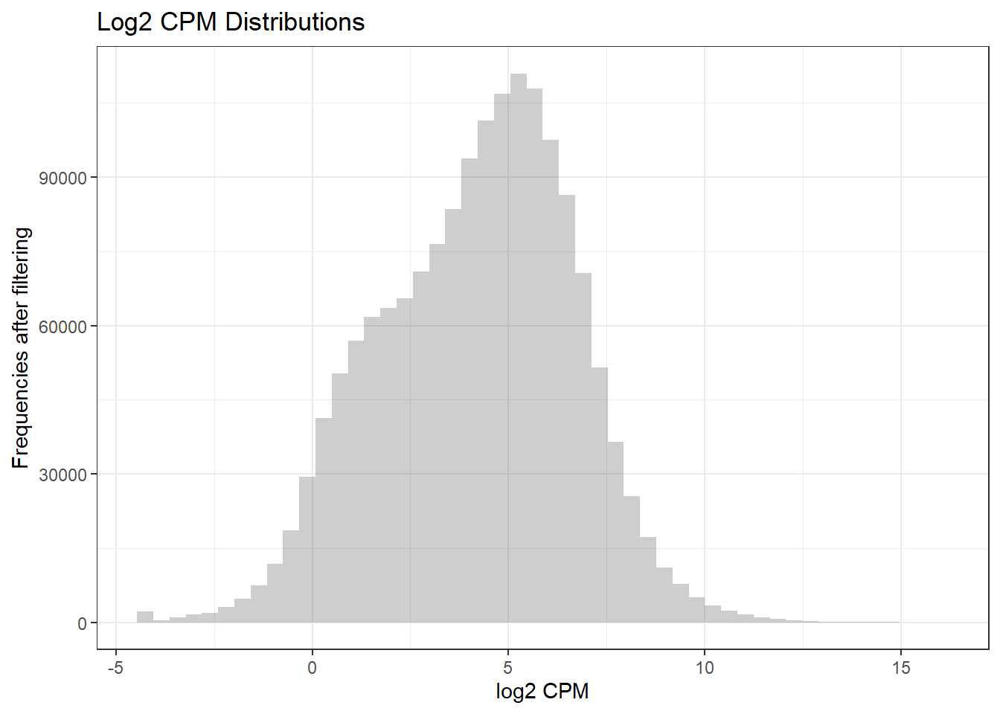
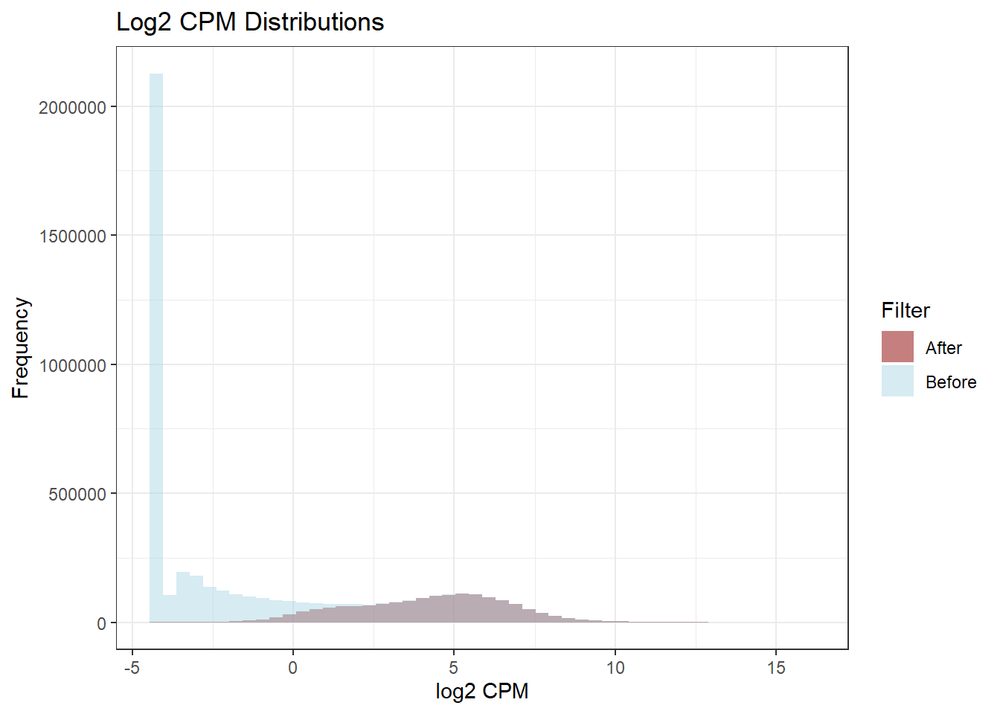
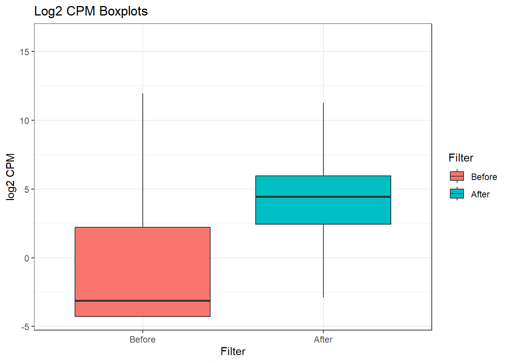
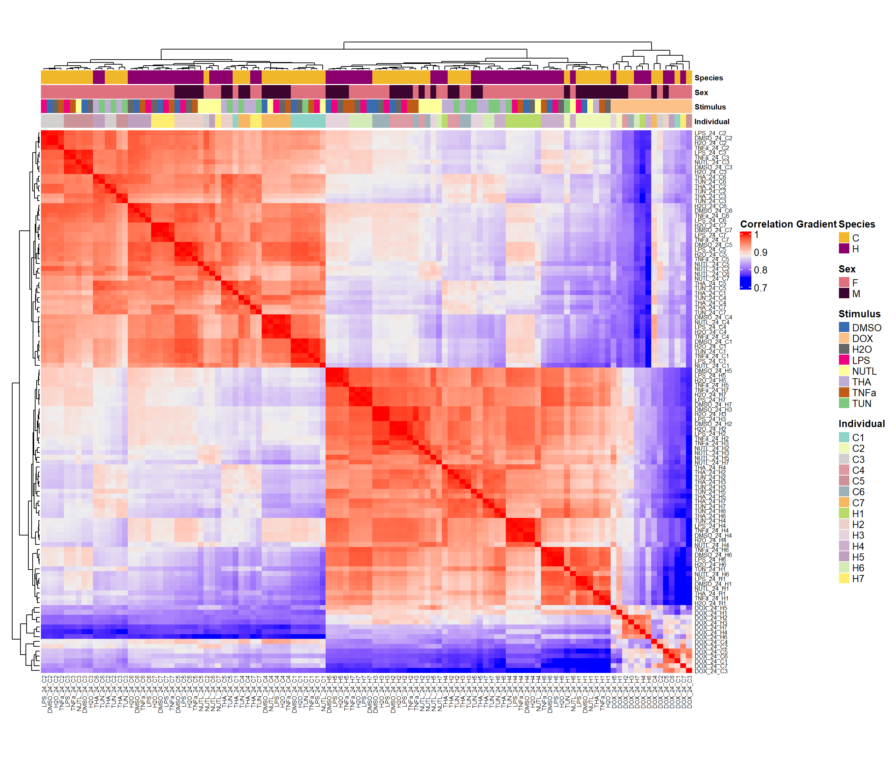
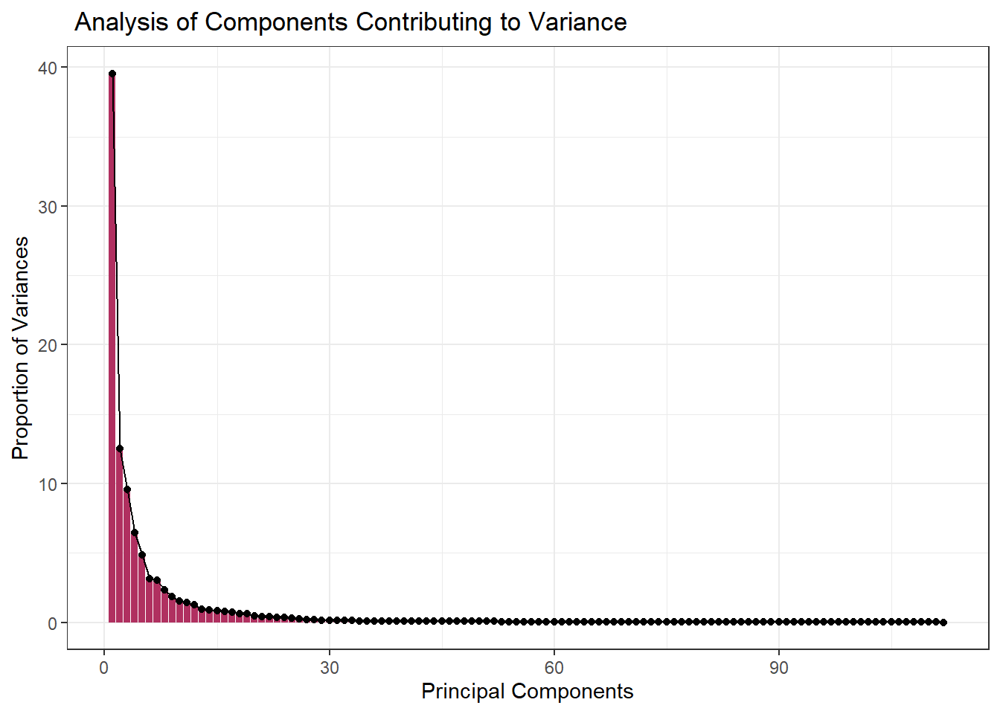

PHTO_RNAseq_Quality_analysis
Harsha Tamtam
2026-08-12
Last updated: 2026-08-12
Checks: 7 0
Knit directory: PHTO/
This reproducible R Markdown analysis was created with workflowr (version 1.7.2). The Checks tab describes the reproducibility checks that were applied when the results were created. The Past versions tab lists the development history.
Great! Since the R Markdown file has been committed to the Git repository, you know the exact version of the code that produced these results.
Great job! The global environment was empty. Objects defined in the global environment can affect the analysis in your R Markdown file in unknown ways. For reproduciblity it’s best to always run the code in an empty environment.
The command set.seed(20260812) was run prior to running
the code in the R Markdown file. Setting a seed ensures that any results
that rely on randomness, e.g. subsampling or permutations, are
reproducible.
Great job! Recording the operating system, R version, and package versions is critical for reproducibility.
Nice! There were no cached chunks for this analysis, so you can be confident that you successfully produced the results during this run.
Great job! Using relative paths to the files within your workflowr project makes it easier to run your code on other machines.
Great! You are using Git for version control. Tracking code development and connecting the code version to the results is critical for reproducibility.
The results in this page were generated with repository version 4c46842. See the Past versions tab to see a history of the changes made to the R Markdown and HTML files.
Note that you need to be careful to ensure that all relevant files for
the analysis have been committed to Git prior to generating the results
(you can use wflow_publish or
wflow_git_commit). workflowr only checks the R Markdown
file, but you know if there are other scripts or data files that it
depends on. Below is the status of the Git repository when the results
were generated:
Ignored files:
Ignored: .Rhistory
Ignored: .Rproj.user/
Untracked files:
Untracked: data/Emma_counts_file.csv
Untracked: data/Emma_metadata_updated_all.RDS
Untracked: data/PHTO_filtered_log2_cpm.RDS
Unstaged changes:
Deleted: analysis/first-analysis.Rmd
Note that any generated files, e.g. HTML, png, CSS, etc., are not included in this status report because it is ok for generated content to have uncommitted changes.
These are the previous versions of the repository in which changes were
made to the R Markdown
(analysis/PHTO_RNAseq_Quality_analysis.Rmd) and HTML
(docs/PHTO_RNAseq_Quality_analysis.html) files. If you’ve
configured a remote Git repository (see ?wflow_git_remote),
click on the hyperlinks in the table below to view the files as they
were in that past version.
| File | Version | Author | Date | Message |
|---|---|---|---|---|
| Rmd | 4c46842 | Harsha Tamtam | 2026-08-12 | wflow_publish("analysis/PHTO_RNAseq_Quality_analysis.Rmd") |
Introduction
PHTO Data
Library Section
library(tidyverse)
library(dplyr)
library(tibble)
library(scales)
library(cowplot)
library(edgeR)
library(smplot2)
library(ggpubr)
library(workflowr)
library(ComplexHeatmap)
library(RColorBrewer)
library(gridExtra)
library(ggrepel)
library(ggVennDiagram)
library(grid)
library(ggrepel)
library(org.Hs.eg.db)
library(enrichplot)
library(clusterProfiler)
library(circlize)
library(gprofiler2)
library(stringr)
library(readr)
library(GO.db)
library(AnnotationDbi)File cleaning
Emma_metadata <- readRDS("data/Emma_metadata_updated_all.RDS")
Emma_counts <- read.csv("data/Emma_counts_file.csv")
stimulus_cleaned_metadata <- Emma_metadata %>%
dplyr::filter(!Stimulus %in% c("EtOH", "PFOA", "BPA"))
cleaned_metadata_24hr <- stimulus_cleaned_metadata %>%
dplyr::filter(Time == 24)
cleaned_counts <- Emma_counts %>%
as.data.frame() %>%
rename(., Ensembl = gene_id) %>%
pivot_longer(-Ensembl, names_to = "Samples", values_to = "raw_counts") %>%
left_join(cleaned_metadata_24hr, by = c("Samples" = "Sample_ID")) %>%
dplyr::select(Ensembl, raw_counts, Final_sample_name) %>%
pivot_wider(names_from = Final_sample_name, values_from = raw_counts) %>%
column_to_rownames("Ensembl") %>%
dplyr::select(-`NA`)###Emma’s sample data distribution
count_df <- cleaned_counts %>%
mutate(across(everything(), as.numeric)) %>%
as.data.frame() %>%
rownames_to_column("genes") %>%
pivot_longer(-genes, names_to = "Samples", values_to = "count_distributions") %>%
mutate(count_distributions = as.numeric(count_distributions))
ggplot(count_df, aes(x= Samples, y=count_distributions))+
geom_boxplot()+
labs(title = "Individual Count Distributions", y="RNA Count Distributions")+
theme_bw()+
theme(plot.title = element_text(size = rel(2), hjust = 0.5),
axis.title = element_text(size = 15, color = "black"),
axis.ticks = element_line(linewidth = 1.5),
axis.text.y = element_text(size =10, color = "black", angle = 0, hjust = 0.8, vjust = 0.5),
axis.text.x = element_text(size =10, color = "black", angle = 90, hjust = 1, vjust = 0.2),
strip.text.y = element_text(color = "white"))
ggplot(count_df, aes(x = Samples, y = count_distributions+0.000000000000001)) +
geom_boxplot()+
scale_y_log10()+
labs(title = "Individual Count Distributions",y="RNA Count Distributions")+
theme_bw()+
theme(plot.title = element_text(size = rel(2), hjust = 0.5),
axis.title = element_text(size = 15, color = "black"),
axis.ticks = element_line(linewidth = 1.5),
axis.text.y = element_text(size =10, color = "black", angle = 0, hjust = 0.8, vjust = 0.5),
axis.text.x = element_text(size =10, color = "black", angle = 90, hjust = 1, vjust = 0.2),
strip.text.y = element_text(color = "white"))
Converting raw counts to raw log2cpm
count_matrix <- cleaned_counts %>%
mutate(across(everything(), as.numeric)) %>%
as.matrix()
log2_cpm <- cpm(count_matrix, log = TRUE) %>%
as.data.frame() %>%
rownames_to_column("genes") %>%
as_tibble()Filtering log2cpm counts
gene_means <- log2_cpm %>%
column_to_rownames(var = "genes") %>%
rowMeans()
PHTO_filtered_counts <- count_matrix[gene_means > 0, ]
PHTO_filtered_log2_cpm <- cpm(PHTO_filtered_counts, log = TRUE)
# saveRDS(PHTO_filtered_log2_cpm,"data/PHTO_filtered_log2_cpm.RDS")
# this code output the number of rows, i.e: the number of genes where log2 > 0
nrow(log2_cpm) [1] 44125nrow(PHTO_filtered_log2_cpm)[1] 14217 # this code outputs the difference between rows of the df log2_cpm, unfiltered from the rows of the df PHTO_filtered_log2_cpm, which is the number of genes that were removed from filtering, as in the number of genes removed where log2 cpm < 0
nrow(log2_cpm) - nrow(PHTO_filtered_log2_cpm)[1] 29908# Before filtering
before_tbl <- log2_cpm %>%
as.data.frame() %>%
pivot_longer(-genes, names_to = "Samples", values_to = "log2cpm") %>%
mutate(Filter = "Before")
# After filtering
after_tbl <- PHTO_filtered_log2_cpm %>%
as.data.frame() %>%
rownames_to_column(var = "genes") %>%
pivot_longer(-genes, names_to = "Samples", values_to = "log2cpm") %>%
mutate(Filter = "After")
# This combines the before and after tables to visualize the original and filtered cpm frequency values
combined_tbl <- bind_rows(before_tbl, after_tbl)
# This code creates a histogram cpm distribution **before filtering**
ggplot(before_tbl, aes(x = log2cpm, fill = )) +
geom_histogram(bins = 50, alpha = 0.3, position = ("identity")) +
theme_bw() +
labs(title = "Log2 CPM Distributions", x = "log2 CPM", y = "Frequencies before filtering")
# This code creates a histogram cpm distribution **after filtering**
ggplot(after_tbl, aes(x = log2cpm, fill = )) +
geom_histogram(bins = 50, alpha = 0.3, position = ("identity")) +
theme_bw() +
labs(title = "Log2 CPM Distributions", x = "log2 CPM", y = "Frequencies after filtering")
# This code creates a histogram cpm distribution data before and after filtering
ggplot(combined_tbl, aes(x = log2cpm, fill = Filter)) +
geom_histogram(bins = 50, alpha = 0.5, position = ("identity")) +
scale_fill_manual(
values = c(
"Before" = "lightblue",
"After" = "darkred")
) +
theme_bw() +
labs(title = "Log2 CPM Distributions", x = "log2 CPM", y = "Frequency")
# This code creates box plots cpm distribution data before and after filtering
reordered_combined_tbl <- combined_tbl %>%
mutate(Filter = factor(Filter, levels = c("Before", "After")))
ggplot(reordered_combined_tbl, aes(x = Filter, y = log2cpm, fill = Filter)) +
geom_boxplot(outlier.shape = NA) +
theme_bw() +
labs(title = "Log2 CPM Boxplots",y = "log2 CPM")
Observing how samples compare with one another
scatter_function <- function(log2_filtered_df, sample_name){
after_filter_with_metadata <- log2_filtered_df %>%
left_join(cleaned_metadata_24hr, by = c("Samples" = "Final_sample_name")) %>%
dplyr::select(genes, log2cpm, Samples) %>%
dplyr::filter(Samples %in% c("H2O_24_C2", sample_name))
wide_scatter <- after_filter_with_metadata %>%
pivot_wider(names_from = Samples, values_from = log2cpm) %>%
ggplot(., aes(x = H2O_24_C2, y = .data[[sample_name]])) +
geom_point() +
stat_cor(method = "pearson") +
theme_classic()
}lapply(X = c("H2O_24_C1", "DMSO_24_C2", "TUN_24_C2", "THA_24_C2", "DOX_24_C2", "NUTL_24_C2", "LPS_24_C2", "TNFa_24_C2", "H2O_24_H2"), FUN = function(x) {scatter_function(after_tbl, x)})[[1]]
[[2]]
[[3]]
[[4]]
[[5]]
[[6]]
[[7]]
[[8]]
[[9]]
Heatmap of spearman correlations
spearman_df <- after_tbl %>%
left_join(cleaned_metadata_24hr, by = c("Samples" = "Final_sample_name")) %>%
select(genes, log2cpm, Samples) %>%
pivot_wider(names_from = Samples, values_from = log2cpm) %>%
column_to_rownames(var = "genes")
# saveRDS(spearman_df,"data/Ensembl_Condition_filtered_log2cpm_counts_df.RDS")
#head(spearman_df)
attribute_labels_df <- cleaned_metadata_24hr %>%
select(Sex, Species, Ind, Stimulus, Final_sample_name) %>%
column_to_rownames(var = "Final_sample_name") %>%
as.tibble()
#head(attribute_labels_df)
spearman_cor <- cor(
spearman_df,
method = "spearman"
)
individual_colors <- structure(
# brewer.pal(12, "Set3"), ## I would use this line of code if I had 12 unique Individuals. However, I have 14, so I need to use the one below to generate colors outside of the main 12 colors in the brwer.pal structure
colorRampPalette(brewer.pal(12, "Set3"))(14),
names = unique(attribute_labels_df$Ind)
)
stimulus_colors <- structure(
brewer.pal(8, "Accent"),
names = unique(attribute_labels_df$Stimulus)
)
heatmap_anno <- HeatmapAnnotation(
Species = attribute_labels_df$Species,
Sex = attribute_labels_df$Sex,
Stimulus = attribute_labels_df$Stimulus,
Individual = attribute_labels_df$Ind,
col = list(
Species = c(
C = "#F1B72B",
H = "#8B006D"
),
Sex = c(
M = "#3C042F",
F = "#DF707E"
),
Stimulus = stimulus_colors
,
Individual = individual_colors
),
annotation_name_gp = grid::gpar(
fontsize = 8,
fontface = "bold"
)
)
Heatmap(
spearman_cor,
name = "Correlation Gradient",
width = unit(24, "cm"),
height = unit(20, "cm"),
row_names_gp = gpar(fontsize = 6),
column_names_gp = gpar(fontsize = 6),
top_annotation = heatmap_anno
)
Scree plot
pca_df <- t(spearman_df)
pca_plotting <- prcomp(pca_df,
center = TRUE,
scale. = FALSE,
retx = TRUE
)
pca_df <- as.data.frame(pca_plotting$x)
head(pca_df) PC1 PC2 PC3 PC4 PC5 PC6
TUN_24_C1 -82.35884 -12.867214 53.75584 -16.07051 8.315270 -12.860654
THA_24_C1 -77.14562 -10.295925 30.91575 45.70347 16.383685 -10.756215
DOX_24_C1 -62.67059 101.160479 32.09189 -15.69629 3.453933 -69.418028
NUTL_24_C1 -82.96728 1.496706 58.92356 15.36542 -34.382628 -1.581372
DMSO_24_C1 -81.83356 -12.059772 48.87330 -16.91550 8.031912 -11.098426
LPS_24_C1 -83.41493 -9.396323 53.35187 -17.34687 4.979122 -13.473891
PC7 PC8 PC9 PC10 PC11 PC12
TUN_24_C1 3.116764 -25.57806 12.520428 -13.161847 12.213139 -10.1811414
THA_24_C1 -6.139827 -20.36039 7.404644 -12.135099 12.036892 -9.0910967
DOX_24_C1 42.359312 -31.38850 2.187338 -3.201623 -10.451416 20.2783802
NUTL_24_C1 -8.173089 -27.42515 32.913167 -11.052473 -2.162671 -0.3947842
DMSO_24_C1 2.138830 -25.06437 12.090077 -15.539965 12.025611 -10.0999302
LPS_24_C1 6.952038 -33.22225 14.554720 -10.945024 15.773722 -12.2953695
PC13 PC14 PC15 PC16 PC17 PC18
TUN_24_C1 4.9557079 -20.25003 3.107460 -3.85114103 4.7696856 -1.447512
THA_24_C1 6.3515051 -12.97876 1.968285 1.93160643 7.1258665 6.043085
DOX_24_C1 -6.0481688 -14.77831 5.687104 -25.96934118 -24.3274844 -2.824745
NUTL_24_C1 -0.3654082 -15.44282 19.156056 10.23787020 0.3749228 -2.874616
DMSO_24_C1 4.5626561 -19.38964 3.036649 -5.53973347 3.6037818 -2.407370
LPS_24_C1 0.8170978 -15.59031 5.520689 0.09890021 2.5590661 3.011867
PC19 PC20 PC21 PC22 PC23 PC24
TUN_24_C1 5.604491 -6.6738226 -5.849881 8.630701 -6.111594 -1.017150
THA_24_C1 7.465215 6.8890605 -9.979206 5.404932 14.272453 8.734293
DOX_24_C1 -6.427968 -6.6272184 -8.867506 -21.861361 4.184894 -5.985332
NUTL_24_C1 11.405240 4.1735827 7.373220 3.282572 5.602989 1.111568
DMSO_24_C1 8.151525 -7.7199230 -4.369693 11.633920 -5.183528 -2.090309
LPS_24_C1 12.887128 -0.3630851 -1.537773 7.940998 1.496968 -1.919005
PC25 PC26 PC27 PC28 PC29 PC30
TUN_24_C1 1.922410 0.006724376 0.4723396 -0.99067810 0.1868977 -2.9809610
THA_24_C1 -7.484947 1.415903763 11.2201871 -0.18561449 -1.3351506 0.9922116
DOX_24_C1 -5.692825 -8.259622036 -1.7188505 -4.49598792 2.5230851 -4.7939687
NUTL_24_C1 -7.192187 2.738750785 -3.2115278 -5.47621495 -10.6796556 7.3345359
DMSO_24_C1 1.036520 2.352007021 -0.4633981 -0.03564673 0.6998790 -0.5528917
LPS_24_C1 -2.549609 -3.021049039 -6.3535569 8.93637245 3.4903120 -0.3261051
PC31 PC32 PC33 PC34 PC35 PC36
TUN_24_C1 3.041917 -2.7540619 1.9114584 -0.2130545 0.4160036 -1.3376742
THA_24_C1 -3.677164 0.8260991 2.9006365 -2.4354624 3.9873727 2.0595545
DOX_24_C1 -6.071000 1.1802500 -4.8422057 9.8447682 3.6140768 -2.5908337
NUTL_24_C1 -2.874485 -1.7836979 -2.1541373 -3.6649037 4.2587586 0.5212733
DMSO_24_C1 3.257316 -1.1902021 0.2938913 -1.0859612 -0.2281636 -0.4731894
LPS_24_C1 -4.604264 4.9685154 -2.1131817 -0.8616680 -3.2083871 -3.1408965
PC37 PC38 PC39 PC40 PC41 PC42
TUN_24_C1 1.85115210 -0.7155349 1.6505174 0.06248711 0.8117846 -3.4969843
THA_24_C1 -3.64611717 -0.4347502 3.0911176 -4.59105119 -0.4765138 -3.8246364
DOX_24_C1 -7.85346865 3.9921999 1.2828491 -0.99953408 -5.8431647 4.4669478
NUTL_24_C1 -2.03951872 1.2311898 -1.7265547 1.63950986 -1.9167557 1.7153390
DMSO_24_C1 -0.09094832 1.0634331 0.8524826 -1.54593638 4.1585124 -0.2086155
LPS_24_C1 6.21231538 -4.8965496 3.0812425 2.31999936 1.4214051 -1.2289240
PC43 PC44 PC45 PC46 PC47 PC48
TUN_24_C1 0.3044405 1.799035978 0.2500696 1.0935983 -1.9695601 -1.2354236
THA_24_C1 0.7146003 1.724855284 -5.4762118 1.3161210 3.2387952 1.3607856
DOX_24_C1 6.7357661 0.694382494 1.6354688 -3.4928311 -6.0544553 3.0490682
NUTL_24_C1 1.0915684 -5.529297591 2.6059443 -0.8533057 5.8395042 -1.7928159
DMSO_24_C1 0.5858443 1.876682340 -0.7739500 3.7417954 0.2482774 -0.3457985
LPS_24_C1 -2.5793641 -0.008593694 2.3886249 -2.7953414 -1.3394304 -0.4766868
PC49 PC50 PC51 PC52 PC53 PC54
TUN_24_C1 0.45843594 2.315136 -1.478494 -0.7432157 -1.1374264 -0.7525182
THA_24_C1 -0.26335494 -4.767674 1.213466 -3.2403710 0.6138791 1.6928316
DOX_24_C1 -4.54110492 -2.058822 3.597602 0.1680483 0.2463453 1.1105203
NUTL_24_C1 -0.82103878 2.315121 4.869052 1.9650616 2.8105421 0.7375034
DMSO_24_C1 -0.06213621 1.747319 -1.658634 -1.8700115 -0.6239125 4.6632943
LPS_24_C1 0.37210041 -1.560638 -2.083469 4.1259832 -0.2422620 -4.9164236
PC55 PC56 PC57 PC58 PC59 PC60
TUN_24_C1 1.8740325 1.0509622 3.3048097 -2.51664608 -2.97313695 -1.4765838
THA_24_C1 -7.4074383 -7.2608086 -2.5768567 6.34600926 -0.02681861 4.8918631
DOX_24_C1 0.8793731 0.8422948 -0.1470807 -0.18673517 1.20397738 0.2365623
NUTL_24_C1 4.5503103 -2.6305510 -3.7602230 -0.08557343 0.92339927 -3.8194144
DMSO_24_C1 5.2368501 -0.9312892 2.4663084 0.35776590 -4.28436400 -1.8692600
LPS_24_C1 -1.2172389 3.6340604 0.2540156 -2.71217545 0.31624569 1.0394274
PC61 PC62 PC63 PC64 PC65 PC66
TUN_24_C1 -0.5164732 -0.5044111 1.0158112 0.6654621 0.5569102 2.0875606
THA_24_C1 -4.0770211 -4.9762232 1.6014526 -0.4836532 -3.1639054 -2.9241717
DOX_24_C1 -1.0324071 -0.3155796 -1.0259787 1.8935495 0.7746396 -0.6054431
NUTL_24_C1 6.1359548 2.1600847 -2.6304964 -0.7881516 -3.7152478 4.2692217
DMSO_24_C1 1.1386611 0.2470180 0.9689558 5.1875889 -4.7636972 -0.8915944
LPS_24_C1 -1.1927276 1.6394624 -0.5161737 -3.1447959 5.0747919 2.2065680
PC67 PC68 PC69 PC70 PC71 PC72
TUN_24_C1 2.9676091 -1.2822270 -2.3128799 -0.5127140 -0.8925905 -1.0660455
THA_24_C1 -0.2435707 -2.6871011 -0.3018757 -2.7035880 -6.7571240 -2.3900294
DOX_24_C1 0.5120462 -0.0750992 -0.8412755 -0.2963648 -0.6239261 0.4044147
NUTL_24_C1 -5.0238179 1.4592002 1.7907014 -2.0428093 -3.5492868 2.2363879
DMSO_24_C1 3.4451158 -1.7343411 2.8718662 -0.5480176 5.3114420 -0.4181389
LPS_24_C1 1.1276859 1.0319767 1.0875232 1.7341475 0.3139451 -0.6480457
PC73 PC74 PC75 PC76 PC77 PC78
TUN_24_C1 -1.79102606 -1.5367032 2.4866395 1.05550115 0.5461494 0.4032771
THA_24_C1 0.35745028 -2.0663312 -0.5641675 -2.17387756 2.2993309 0.8725225
DOX_24_C1 0.04717099 0.7274000 -0.5612739 -0.03105605 0.4852529 -0.1049952
NUTL_24_C1 -2.60975173 -0.7512551 2.5399572 3.56118351 -1.9330157 1.1652512
DMSO_24_C1 -0.38392964 -1.5664406 -7.0245549 0.61789289 -4.8075849 -2.0066555
LPS_24_C1 0.02814411 1.0995224 1.4237793 -0.54546516 3.1088715 -0.4389208
PC79 PC80 PC81 PC82 PC83
TUN_24_C1 0.86090334 2.11572245 0.83550069 1.4715062 2.15993633
THA_24_C1 -0.09347501 -1.12251770 -0.02045674 1.2567502 0.01793204
DOX_24_C1 0.21642388 0.04576414 -0.62833985 -0.2829149 0.05147470
NUTL_24_C1 -2.28686223 1.53904380 1.55117424 0.9993244 -0.94157310
DMSO_24_C1 1.72056699 -0.55194352 -2.77317020 -3.4490220 1.07666960
LPS_24_C1 -2.76169191 0.33513432 5.70759250 2.1471836 -2.96595114
PC84 PC85 PC86 PC87 PC88
TUN_24_C1 -2.575275294 -1.5492152 -1.0248489 -2.84086626 -3.43066497
THA_24_C1 0.005722621 0.8426248 1.7017623 -1.22469121 0.91599031
DOX_24_C1 0.175949051 0.0249458 0.2671144 -0.09001051 0.06158393
NUTL_24_C1 -1.935010990 -1.0865329 -0.4514210 1.29020264 -0.26915164
DMSO_24_C1 4.479340949 0.1035923 3.5195524 4.53801468 2.72198131
LPS_24_C1 -0.017260400 -0.3816262 -0.1407839 -1.79890791 1.97695337
PC89 PC90 PC91 PC92 PC93
TUN_24_C1 -1.37511940 -0.09852212 -3.78595740 2.4847735 0.9620138
THA_24_C1 -0.92814411 -1.01240898 0.13562496 -0.9349823 -0.1485766
DOX_24_C1 0.03813391 -0.14969545 0.07332705 -0.1466289 0.2324759
NUTL_24_C1 3.49495173 2.15476829 0.02907820 0.7708641 -0.7634338
DMSO_24_C1 -2.60428701 0.51969203 -1.54867042 -1.4596261 -0.1172870
LPS_24_C1 -2.93192804 -1.03764933 -1.04286730 -2.1698000 3.5404008
PC94 PC95 PC96 PC97 PC98
TUN_24_C1 0.77743508 1.06436960 1.7536174 1.91985383 3.41930880
THA_24_C1 0.38788286 -1.31717907 -2.2873878 0.69957719 -0.57011054
DOX_24_C1 0.01055906 0.13951834 -0.3944690 -0.04994308 0.02369599
NUTL_24_C1 -2.18594025 -0.71765922 0.6094274 0.34374089 -0.15273926
DMSO_24_C1 -2.25916012 -0.36369849 -0.9103762 -1.61803025 -0.86721318
LPS_24_C1 0.07762534 0.02487067 -5.4525574 -3.17026427 -2.34366473
PC99 PC100 PC101 PC102 PC103
TUN_24_C1 -1.49232898 -7.6272276 -1.9713653 7.906429660 0.66228133
THA_24_C1 -0.07132693 0.2045736 -1.0785780 0.257658331 0.13073064
DOX_24_C1 -0.10266612 0.2592768 -0.2430099 -0.004227949 0.04476263
NUTL_24_C1 -1.03189439 0.2476824 0.2012041 -1.566060755 -0.50094732
DMSO_24_C1 -0.85639827 3.3184785 -0.7367679 -1.113443403 0.27634042
LPS_24_C1 -1.20885413 3.6258229 1.6996045 -0.914895494 -2.13557902
PC104 PC105 PC106 PC107 PC108
TUN_24_C1 0.35199750 2.34384982 0.199354715 -1.41031225 -1.88616380
THA_24_C1 -0.50218411 0.11135086 -0.675177573 0.41368213 -0.30671707
DOX_24_C1 0.05288673 0.15174307 0.003566308 0.05187359 0.01217389
NUTL_24_C1 -0.19454642 -0.05270749 -0.068087687 -0.40428559 -0.27475550
DMSO_24_C1 1.67975395 0.13403067 -0.559891491 0.73121397 1.01382170
LPS_24_C1 1.00852080 0.35553100 -1.183928609 1.73091153 0.47594119
PC109 PC110 PC111 PC112
TUN_24_C1 0.998928803 -0.52166620 0.42853200 2.437247e-13
THA_24_C1 -0.526569014 0.33096831 -0.32485452 -3.309517e-14
DOX_24_C1 0.004151488 -0.05421137 0.16090250 1.535417e-13
NUTL_24_C1 0.294355879 -0.14358766 0.02863613 1.167785e-13
DMSO_24_C1 0.493177506 -0.30431498 -0.16176547 4.534029e-13
LPS_24_C1 0.329298758 1.43881290 0.29050390 -2.775227e-14pca_variance <- (
pca_plotting$sdev^2 /
sum(pca_plotting$sdev^2)
)*100
pca_analysis <- data.frame(
Component = 1:length(pca_plotting$sdev),
Variance = pca_variance
)
head(pca_analysis) Component Variance
1 1 39.520426
2 2 12.524477
3 3 9.581540
4 4 6.464476
5 5 4.831645
6 6 3.117651pca_analysis$Samples <- rownames(pca_df)
pca_anno <- pca_df %>%
rownames_to_column("Samples") %>%
left_join(cleaned_metadata_24hr,
by = c("Samples" = "Final_sample_name")
)
head(pca_anno) Samples PC1 PC2 PC3 PC4 PC5 PC6
1 TUN_24_C1 -82.35884 -12.867214 53.75584 -16.07051 8.315270 -12.860654
2 THA_24_C1 -77.14562 -10.295925 30.91575 45.70347 16.383685 -10.756215
3 DOX_24_C1 -62.67059 101.160479 32.09189 -15.69629 3.453933 -69.418028
4 NUTL_24_C1 -82.96728 1.496706 58.92356 15.36542 -34.382628 -1.581372
5 DMSO_24_C1 -81.83356 -12.059772 48.87330 -16.91550 8.031912 -11.098426
6 LPS_24_C1 -83.41493 -9.396323 53.35187 -17.34687 4.979122 -13.473891
PC7 PC8 PC9 PC10 PC11 PC12 PC13
1 3.116764 -25.57806 12.520428 -13.161847 12.213139 -10.1811414 4.9557079
2 -6.139827 -20.36039 7.404644 -12.135099 12.036892 -9.0910967 6.3515051
3 42.359312 -31.38850 2.187338 -3.201623 -10.451416 20.2783802 -6.0481688
4 -8.173089 -27.42515 32.913167 -11.052473 -2.162671 -0.3947842 -0.3654082
5 2.138830 -25.06437 12.090077 -15.539965 12.025611 -10.0999302 4.5626561
6 6.952038 -33.22225 14.554720 -10.945024 15.773722 -12.2953695 0.8170978
PC14 PC15 PC16 PC17 PC18 PC19 PC20
1 -20.25003 3.107460 -3.85114103 4.7696856 -1.447512 5.604491 -6.6738226
2 -12.97876 1.968285 1.93160643 7.1258665 6.043085 7.465215 6.8890605
3 -14.77831 5.687104 -25.96934118 -24.3274844 -2.824745 -6.427968 -6.6272184
4 -15.44282 19.156056 10.23787020 0.3749228 -2.874616 11.405240 4.1735827
5 -19.38964 3.036649 -5.53973347 3.6037818 -2.407370 8.151525 -7.7199230
6 -15.59031 5.520689 0.09890021 2.5590661 3.011867 12.887128 -0.3630851
PC21 PC22 PC23 PC24 PC25 PC26 PC27
1 -5.849881 8.630701 -6.111594 -1.017150 1.922410 0.006724376 0.4723396
2 -9.979206 5.404932 14.272453 8.734293 -7.484947 1.415903763 11.2201871
3 -8.867506 -21.861361 4.184894 -5.985332 -5.692825 -8.259622036 -1.7188505
4 7.373220 3.282572 5.602989 1.111568 -7.192187 2.738750785 -3.2115278
5 -4.369693 11.633920 -5.183528 -2.090309 1.036520 2.352007021 -0.4633981
6 -1.537773 7.940998 1.496968 -1.919005 -2.549609 -3.021049039 -6.3535569
PC28 PC29 PC30 PC31 PC32 PC33 PC34
1 -0.99067810 0.1868977 -2.9809610 3.041917 -2.7540619 1.9114584 -0.2130545
2 -0.18561449 -1.3351506 0.9922116 -3.677164 0.8260991 2.9006365 -2.4354624
3 -4.49598792 2.5230851 -4.7939687 -6.071000 1.1802500 -4.8422057 9.8447682
4 -5.47621495 -10.6796556 7.3345359 -2.874485 -1.7836979 -2.1541373 -3.6649037
5 -0.03564673 0.6998790 -0.5528917 3.257316 -1.1902021 0.2938913 -1.0859612
6 8.93637245 3.4903120 -0.3261051 -4.604264 4.9685154 -2.1131817 -0.8616680
PC35 PC36 PC37 PC38 PC39 PC40
1 0.4160036 -1.3376742 1.85115210 -0.7155349 1.6505174 0.06248711
2 3.9873727 2.0595545 -3.64611717 -0.4347502 3.0911176 -4.59105119
3 3.6140768 -2.5908337 -7.85346865 3.9921999 1.2828491 -0.99953408
4 4.2587586 0.5212733 -2.03951872 1.2311898 -1.7265547 1.63950986
5 -0.2281636 -0.4731894 -0.09094832 1.0634331 0.8524826 -1.54593638
6 -3.2083871 -3.1408965 6.21231538 -4.8965496 3.0812425 2.31999936
PC41 PC42 PC43 PC44 PC45 PC46
1 0.8117846 -3.4969843 0.3044405 1.799035978 0.2500696 1.0935983
2 -0.4765138 -3.8246364 0.7146003 1.724855284 -5.4762118 1.3161210
3 -5.8431647 4.4669478 6.7357661 0.694382494 1.6354688 -3.4928311
4 -1.9167557 1.7153390 1.0915684 -5.529297591 2.6059443 -0.8533057
5 4.1585124 -0.2086155 0.5858443 1.876682340 -0.7739500 3.7417954
6 1.4214051 -1.2289240 -2.5793641 -0.008593694 2.3886249 -2.7953414
PC47 PC48 PC49 PC50 PC51 PC52 PC53
1 -1.9695601 -1.2354236 0.45843594 2.315136 -1.478494 -0.7432157 -1.1374264
2 3.2387952 1.3607856 -0.26335494 -4.767674 1.213466 -3.2403710 0.6138791
3 -6.0544553 3.0490682 -4.54110492 -2.058822 3.597602 0.1680483 0.2463453
4 5.8395042 -1.7928159 -0.82103878 2.315121 4.869052 1.9650616 2.8105421
5 0.2482774 -0.3457985 -0.06213621 1.747319 -1.658634 -1.8700115 -0.6239125
6 -1.3394304 -0.4766868 0.37210041 -1.560638 -2.083469 4.1259832 -0.2422620
PC54 PC55 PC56 PC57 PC58 PC59
1 -0.7525182 1.8740325 1.0509622 3.3048097 -2.51664608 -2.97313695
2 1.6928316 -7.4074383 -7.2608086 -2.5768567 6.34600926 -0.02681861
3 1.1105203 0.8793731 0.8422948 -0.1470807 -0.18673517 1.20397738
4 0.7375034 4.5503103 -2.6305510 -3.7602230 -0.08557343 0.92339927
5 4.6632943 5.2368501 -0.9312892 2.4663084 0.35776590 -4.28436400
6 -4.9164236 -1.2172389 3.6340604 0.2540156 -2.71217545 0.31624569
PC60 PC61 PC62 PC63 PC64 PC65 PC66
1 -1.4765838 -0.5164732 -0.5044111 1.0158112 0.6654621 0.5569102 2.0875606
2 4.8918631 -4.0770211 -4.9762232 1.6014526 -0.4836532 -3.1639054 -2.9241717
3 0.2365623 -1.0324071 -0.3155796 -1.0259787 1.8935495 0.7746396 -0.6054431
4 -3.8194144 6.1359548 2.1600847 -2.6304964 -0.7881516 -3.7152478 4.2692217
5 -1.8692600 1.1386611 0.2470180 0.9689558 5.1875889 -4.7636972 -0.8915944
6 1.0394274 -1.1927276 1.6394624 -0.5161737 -3.1447959 5.0747919 2.2065680
PC67 PC68 PC69 PC70 PC71 PC72 PC73
1 2.9676091 -1.2822270 -2.3128799 -0.5127140 -0.8925905 -1.0660455 -1.79102606
2 -0.2435707 -2.6871011 -0.3018757 -2.7035880 -6.7571240 -2.3900294 0.35745028
3 0.5120462 -0.0750992 -0.8412755 -0.2963648 -0.6239261 0.4044147 0.04717099
4 -5.0238179 1.4592002 1.7907014 -2.0428093 -3.5492868 2.2363879 -2.60975173
5 3.4451158 -1.7343411 2.8718662 -0.5480176 5.3114420 -0.4181389 -0.38392964
6 1.1276859 1.0319767 1.0875232 1.7341475 0.3139451 -0.6480457 0.02814411
PC74 PC75 PC76 PC77 PC78 PC79
1 -1.5367032 2.4866395 1.05550115 0.5461494 0.4032771 0.86090334
2 -2.0663312 -0.5641675 -2.17387756 2.2993309 0.8725225 -0.09347501
3 0.7274000 -0.5612739 -0.03105605 0.4852529 -0.1049952 0.21642388
4 -0.7512551 2.5399572 3.56118351 -1.9330157 1.1652512 -2.28686223
5 -1.5664406 -7.0245549 0.61789289 -4.8075849 -2.0066555 1.72056699
6 1.0995224 1.4237793 -0.54546516 3.1088715 -0.4389208 -2.76169191
PC80 PC81 PC82 PC83 PC84 PC85
1 2.11572245 0.83550069 1.4715062 2.15993633 -2.575275294 -1.5492152
2 -1.12251770 -0.02045674 1.2567502 0.01793204 0.005722621 0.8426248
3 0.04576414 -0.62833985 -0.2829149 0.05147470 0.175949051 0.0249458
4 1.53904380 1.55117424 0.9993244 -0.94157310 -1.935010990 -1.0865329
5 -0.55194352 -2.77317020 -3.4490220 1.07666960 4.479340949 0.1035923
6 0.33513432 5.70759250 2.1471836 -2.96595114 -0.017260400 -0.3816262
PC86 PC87 PC88 PC89 PC90 PC91
1 -1.0248489 -2.84086626 -3.43066497 -1.37511940 -0.09852212 -3.78595740
2 1.7017623 -1.22469121 0.91599031 -0.92814411 -1.01240898 0.13562496
3 0.2671144 -0.09001051 0.06158393 0.03813391 -0.14969545 0.07332705
4 -0.4514210 1.29020264 -0.26915164 3.49495173 2.15476829 0.02907820
5 3.5195524 4.53801468 2.72198131 -2.60428701 0.51969203 -1.54867042
6 -0.1407839 -1.79890791 1.97695337 -2.93192804 -1.03764933 -1.04286730
PC92 PC93 PC94 PC95 PC96 PC97
1 2.4847735 0.9620138 0.77743508 1.06436960 1.7536174 1.91985383
2 -0.9349823 -0.1485766 0.38788286 -1.31717907 -2.2873878 0.69957719
3 -0.1466289 0.2324759 0.01055906 0.13951834 -0.3944690 -0.04994308
4 0.7708641 -0.7634338 -2.18594025 -0.71765922 0.6094274 0.34374089
5 -1.4596261 -0.1172870 -2.25916012 -0.36369849 -0.9103762 -1.61803025
6 -2.1698000 3.5404008 0.07762534 0.02487067 -5.4525574 -3.17026427
PC98 PC99 PC100 PC101 PC102 PC103
1 3.41930880 -1.49232898 -7.6272276 -1.9713653 7.906429660 0.66228133
2 -0.57011054 -0.07132693 0.2045736 -1.0785780 0.257658331 0.13073064
3 0.02369599 -0.10266612 0.2592768 -0.2430099 -0.004227949 0.04476263
4 -0.15273926 -1.03189439 0.2476824 0.2012041 -1.566060755 -0.50094732
5 -0.86721318 -0.85639827 3.3184785 -0.7367679 -1.113443403 0.27634042
6 -2.34366473 -1.20885413 3.6258229 1.6996045 -0.914895494 -2.13557902
PC104 PC105 PC106 PC107 PC108 PC109
1 0.35199750 2.34384982 0.199354715 -1.41031225 -1.88616380 0.998928803
2 -0.50218411 0.11135086 -0.675177573 0.41368213 -0.30671707 -0.526569014
3 0.05288673 0.15174307 0.003566308 0.05187359 0.01217389 0.004151488
4 -0.19454642 -0.05270749 -0.068087687 -0.40428559 -0.27475550 0.294355879
5 1.67975395 0.13403067 -0.559891491 0.73121397 1.01382170 0.493177506
6 1.00852080 0.35553100 -1.183928609 1.73091153 0.47594119 0.329298758
PC110 PC111 PC112 Sample_name Sample_ID Number
1 -0.52166620 0.42853200 2.437247e-13 C3647_12 MCW_EMP_JT_R101 101
2 0.33096831 -0.32485452 -3.309517e-14 C3647_13 MCW_EMP_JT_R102 102
3 -0.05421137 0.16090250 1.535417e-13 C3647_14 MCW_EMP_JT_R103 103
4 -0.14358766 0.02863613 1.167785e-13 C3647_15 MCW_EMP_JT_R104 104
5 -0.30431498 -0.16176547 4.534029e-13 C3647_16 MCW_EMP_JT_R105 105
6 1.43881290 0.29050390 -2.775227e-14 C3647_17 MCW_EMP_JT_R106 106
Line Species Sex Ind Old_Ind Sample Condition Cond Stimulus
1 C3647 C F C1 1 TUN 24hr 0.5 uM TUN_24 TUN_24_C TUN
2 C3647 C F C1 1 THA 24hr 0.5 uM THA_24 THA_24_C THA
3 C3647 C F C1 1 DOX 24hr 0.5 uM DOX_24 DOX_24_C DOX
4 C3647 C F C1 1 NUTL 24hr 10 uM NUTL_24 NUTL_24_C NUTL
5 C3647 C F C1 1 DMSO 24hr 10 uM DMSO_24 DMSO_24_C DMSO
6 C3647 C F C1 1 LPS 24hr 1 ug/mL LPS_24 LPS_24_C LPS
Time Concentration Conc Response Sample_Tx
1 24 0.5 uM 0.5 UPR TUN_0.5_24_C1
2 24 0.5 uM 0.5 UPR THA_0.5_24_C1
3 24 0.5 uM 0.5 DDR DOX_0.5_24_C1
4 24 10 uM 10 DDR NUTL_10_24_C1
5 24 10 uM 10 VEH DMSO_10_24_C1
6 24 1 ug/mL 1 IMR LPS_1_24_C1ggplot(pca_analysis, aes(x = Component , y = Variance)) +
geom_bar(stat = "identity", fill = "maroon") +
geom_line() +
geom_point() +
xlab("Principal Components") +
ylab("Proportion of Variances") +
ggtitle(" Analysis of Components Contributing to Variance") +
theme_bw()
Observations on which factors have the most significant effects on principal component variances
pca_plot_new <- function(df, pc_x = 1, pc_y = 2, col_var, shape_var, pca_plotting, title = "") {
# variance explained
pca_variance <- (pca_plotting$sdev^2 / sum(pca_plotting$sdev^2))*100
# axis labels
x_lab <- sprintf("PC%d (%.1f%%)", pc_x, pca_variance[pc_x] * 100)
y_lab <- sprintf("PC%d (%.1f%%)", pc_y, pca_variance[pc_y] * 100)
ggplot(df, aes(x = .data[[paste0("PC", pc_x)]],
y = .data[[paste0("PC", pc_y)]],
color = !!sym(col_var),
shape = !!sym(shape_var))) +
geom_point(size = 5) +
labs(title = title, x = x_lab, y = y_lab) +
scale_color_manual(values = c(
"#8B006D","#DF707E","#F1B72B",
"#3386DD","#707031","#41B333"
))
}
pca_plot <-
function(pca_df, col_var = NULL, shape_var = NULL, title = "") {
ggplot(df) + geom_point(aes(
x = PC1,
y = PC2,
color = col_var,
shape = shape_var
),
size = 5) +
labs(title = title, x = "PC 1", y = "PC 2") +
scale_color_manual(values = c(
"#8B006D",
"#DF707E",
"#F1B72B",
"#3386DD",
"#707031",
"#41B333"
))
}
get_regr_pval <- function(model) {
# Returns the p-value for the F statistic of a linear model
# mod: class lm
stopifnot(inherits(model, "lm"))
fstat <- summary(model)$fstatistic
pval <- 1 - pf(fstat[1], fstat[2], fstat[3])
return(pval)
}
plot_versus_pc <- function(pca_anno, pc_num, facs) {
# df: data.frame
# pc_num: numeric, specific PC for plotting
# facs: column name of df for plotting against PC
pc_char <- paste0("PC", pc_num)
# Calculate F-statistic p-value for linear model
form <- as.formula(paste(pc_char, "~", facs))
model <- lm(form, data = pca_anno)
pval <- get_regr_pval(model)
if (is.numeric(pca_anno[[facs]])) {
ggplot(pca_anno, aes_string(x = facs, y = pc_char)) +
geom_point() +
geom_smooth(method = "lm") +
labs(title = sprintf("p-val: %.3g", pval))
}
else {
ggplot(pca_anno, aes_string(x = facs, y = pc_char)) +
geom_boxplot() +
labs(title = sprintf("p-val: %.3g", pval))
}
}
#The lines of code below ouput the number of unique labels for each attribute I call from the pca_charts data frame
# sapply(c("species", "tx", "ind", "sex"), function(x) {
# length(unique(na.omit(pca_charts[[x]])))
# })rownames(pca_anno) <- pca_anno$Samples
pca_converted <- pca_anno %>%
tidyr::separate(
Samples,
into = c("stimulus", "time", "individual"),
sep = "_"
) %>%
mutate(
species = case_when(
startsWith(individual, "H") ~ "Human",
startsWith(individual, "C") ~ "Chimp",
TRUE ~ NA_character_
)
) %>%
dplyr::select(
species,
stimulus,
individual,
everything()
)
pca_charts <- pca_converted %>%
mutate(species=factor(species, levels = c("Chimp", "Human"))) %>%
mutate(stimulus=factor(stimulus, levels = c("H2O", "DMSO", "DOX", "NUTL", "LPS", "TNFa", "TUN", "THA"))) %>%
mutate(sex=factor(Sex, levels=c("F","M")))
facs <- c("species", "sex", "stimulus", "individual")
names(facs) <- c("Species", "Sex", "Stimulus", "Individual")
plots_of_pcas <- lapply(names(facs), function(f_label) {
f <- facs[f_label]
f_v_pc1 <- plot_versus_pc(pca_charts, 1, f)
f_v_pc2 <- plot_versus_pc(pca_charts, 2, f)
f_v_pc3 <- plot_versus_pc(pca_charts, 3, f)
f_v_pc4 <- plot_versus_pc(pca_charts, 4, f)
f_v_pc5 <- plot_versus_pc(pca_charts, 5, f)
f_v_pc6 <- plot_versus_pc(pca_charts, 6, f)
grid.arrange(f_v_pc1, f_v_pc2, f_v_pc3, f_v_pc4, f_v_pc5, f_v_pc6, ncol = 2, top = paste0(f_label," PCA Analyses"))
})


PCA plot demonstrating Species/Sex/Individual (PC1) and Treatment (PC2) stratification
stimulus_shape <- scale_shape_manual(
values = c("DMSO" = 16,
"DOX" = 17,
"H2O" = 18,
"LPS" = 19,
"NUTL" = 20,
"THA" = 21,
"TNFa" = 22,
"TUN" = 23
),
name = "Stimuli"
)
ggplot(
pca_converted,
aes(
x = PC1,
y = PC2,
color = Species,
shape = stimulus
)
) +
geom_point(size = 4) +
geom_text_repel(
aes(label = rownames(pca_converted)), size = 2.5) +
stimulus_shape +
labs(
title = "PCA of RNA-seq Samples",
x = paste0(
"PC1: ",
round(pca_variance[1], 1),
"% variance"
),
y = paste0(
"PC2: ",
round(pca_variance[2], 1),
"% variance"
)
) +
theme_classic()
sessionInfo()R version 4.6.0 (2026-04-24 ucrt)
Platform: x86_64-w64-mingw32/x64
Running under: Windows 11 x64 (build 26200)
Matrix products: default
LAPACK version 3.12.1
locale:
[1] LC_COLLATE=English_United States.utf8
[2] LC_CTYPE=English_United States.utf8
[3] LC_MONETARY=English_United States.utf8
[4] LC_NUMERIC=C
[5] LC_TIME=English_United States.utf8
time zone: America/Chicago
tzcode source: internal
attached base packages:
[1] stats4 grid stats graphics grDevices utils datasets
[8] methods base
other attached packages:
[1] GO.db_3.23.1 gprofiler2_0.2.4 circlize_0.4.18
[4] clusterProfiler_4.20.0 enrichplot_1.32.0 org.Hs.eg.db_3.23.1
[7] AnnotationDbi_1.74.0 IRanges_2.46.0 S4Vectors_0.50.1
[10] Biobase_2.72.0 BiocGenerics_0.58.1 generics_0.1.4
[13] ggVennDiagram_1.5.7 ggrepel_0.9.8 gridExtra_2.3
[16] RColorBrewer_1.1-3 ComplexHeatmap_2.25.3 ggpubr_0.6.3
[19] smplot2_0.2.6 edgeR_4.10.0 limma_3.68.2
[22] cowplot_1.2.0 scales_1.4.0 lubridate_1.9.5
[25] forcats_1.0.1 stringr_1.6.0 dplyr_1.2.1
[28] purrr_1.2.2 readr_2.2.0 tidyr_1.3.2
[31] tibble_3.3.1 ggplot2_4.0.3 tidyverse_2.0.0
[34] workflowr_1.7.2
loaded via a namespace (and not attached):
[1] splines_4.6.0 later_1.4.8 ggplotify_0.1.3
[4] polyclip_1.10-7 enrichit_0.1.5 rpart_4.1.27
[7] httr2_1.2.3 lifecycle_1.0.5 rstatix_1.0.0
[10] doParallel_1.0.17 rprojroot_2.1.1 processx_3.9.0
[13] lattice_0.22-9 MASS_7.3-65 backports_1.5.1
[16] magrittr_2.0.5 plotly_4.12.0 Hmisc_5.2-5
[19] sass_0.4.10 rmarkdown_2.31 jquerylib_0.1.4
[22] yaml_2.3.12 httpuv_1.6.17 otel_0.2.0
[25] ggtangle_0.1.2 DBI_1.3.0 abind_1.4-8
[28] yulab.utils_0.2.4 nnet_7.3-20 tweenr_2.0.3
[31] rappdirs_0.3.4 aisdk_1.4.12 git2r_0.36.2
[34] gdtools_0.5.1 tidytree_0.4.8 codetools_0.2-20
[37] DOSE_4.6.0 ggforce_0.5.0 tidyselect_1.2.1
[40] shape_1.4.6.1 aplot_0.3.1 farver_2.1.2
[43] matrixStats_1.5.0 base64enc_0.1-6 Seqinfo_1.2.0
[46] jsonlite_2.0.0 GetoptLong_1.1.1 Formula_1.2-5
[49] iterators_1.0.14 systemfonts_1.3.2 foreach_1.5.2
[52] tools_4.6.0 ggnewscale_0.5.2 treeio_1.36.1
[55] Rcpp_1.1.1-1.1 glue_1.8.1 xfun_0.57
[58] qvalue_2.44.0 withr_3.0.3 fastmap_1.2.0
[61] callr_3.8.0 digest_0.6.39 timechange_0.4.0
[64] R6_2.6.1 gridGraphics_0.5-1 colorspace_2.1-2
[67] RSQLite_3.52.0 fontLiberation_0.1.0 data.table_1.18.4
[70] httr_1.4.8 htmlwidgets_1.6.4 scatterpie_0.2.6
[73] whisker_0.4.1 pkgconfig_2.0.3 gtable_0.3.6
[76] blob_1.3.0 S7_0.2.2 XVector_0.52.0
[79] htmltools_0.5.9 fontBitstreamVera_0.1.1 carData_3.0-6
[82] pwr_1.3-0 clue_0.3-68 png_0.1-9
[85] ggfun_0.2.1 knitr_1.51 rstudioapi_0.19.0
[88] tzdb_0.5.0 reshape2_1.4.5 rjson_0.2.23
[91] checkmate_2.3.4 nlme_3.1-169 cachem_1.1.0
[94] zoo_1.8-15 GlobalOptions_0.1.4 parallel_4.6.0
[97] foreign_0.8-91 pillar_1.11.1 vctrs_0.7.3
[100] promises_1.5.0 tidydr_0.0.6 car_3.1-5
[103] cluster_2.1.8.2 htmlTable_2.5.0 evaluate_1.0.5
[106] cli_3.6.6 locfit_1.5-9.12 compiler_4.6.0
[109] rlang_1.2.0 crayon_1.5.3 ggsignif_0.6.4
[112] labeling_0.4.3 getPass_0.2-4 plyr_1.8.9
[115] fs_2.1.0 ggiraph_0.9.6 stringi_1.8.7
[118] viridisLite_0.4.3 BiocParallel_1.46.0 Biostrings_2.80.0
[121] lazyeval_0.2.3 Matrix_1.7-5 GOSemSim_2.38.0
[124] fontquiver_0.2.1 hms_1.1.4 patchwork_1.3.2
[127] bit64_4.8.0 KEGGREST_1.52.2 statmod_1.5.2
[130] igraph_2.3.3 broom_1.0.13 memoise_2.0.1
[133] bslib_0.11.0 ggtree_4.2.0 bit_4.6.0
[136] gson_0.2.0 ape_5.8-1